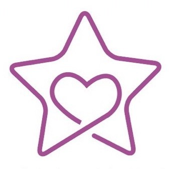

Dreamworkers
The Story of Dreamworkers
Written by LYK-CC, This blog is generated with GPT machine with inputted prompt.
Chapter 1: The Origin
It was a quiet Friday afternoon, I was only an 8th grader. Just before the end of the school day. The second-to-last period on our schedule was homeroom, which was usually a time for announcements or class bonding.
But that day, my team and I were in a hurry. We had a tight deadline for our SJMMA math modeling competition, a afterschool club which I was part of (we usually had our last period on Friday for club activities) and we were deep into building our final presentation slides. Instead of staying in class, we quietly slipped away to one of the meeting rooms to keep working.
I remember being completely absorbed in the details of PowerPoint, adjusting equations, reordering graphs, and debating visual effects. That’s when our homeroom teacher, who was also my physics instructor, came looking for me. He asked me to return to the classroom because there was a group of students there giving a presentation. They were, apparently, from another club and were promoting a charity event.
The project we were working on, which you can still view on GitLab.
When I walked back in, I saw a few unfamiliar faces standing at the front of the class. They introduced themselves as organizers of a nonprofit initiative and explained that they were planning a charity concert for children with autism. The goal was to raise awareness and donate all the proceeds to a special school for autistic children.
I wasn’t sure what to think. I listened passively, unsure if I was just being polite or curious. But then something in their presentation caught my attention. They spoke about the children as “gifts from the stars”, which is a phrase that stuck with me. These were kids who, for reasons no one could fully explain, had fallen behind in the traditional systems of learning and growth. The down syndrome kids. The speakers emphasized how important it was for society to not just acknowledge these children, but to stand with them, support them, and understand them.
I knew deep down that I wasn’t the ideal candidate for a volunteer role like this. I wasn’t someone who naturally gravitated toward service or social projects. But something about this one pulled me in. Maybe it was the way they spoke. Maybe it was the timing. Or maybe it was simply that I’ve always been someone who gets curious about everything.
I mentioned my WeChat account before, TianceSec (refer to the next webpage for my story). It was part of my journey on cybersecurity education. I showed them some of the materials, and to my surprise, they were genuinely impressed. The conversation flowed effortlessly after that. We shared ideas, swapped stories, and they invited me to join them. I was offered a role on the backend team, helping with event planning and designing the presentation slides that would be used during the concert.
A few weeks later, I went with them on a visit to the charity’s base. It was my first real-world exposure to this kind of work. We toured the facility, sat through a talk given by the program’s director, and learned about how the organization functioned day to day. I heard stories about the children, about their families, their challenges, and their victories. We were also given guidelines on how to interact with the kids, how to be respectful, how to listen, and how to understand their world without trying to change it.

上海徐汇区三叶草儿童康健园
It wasn’t until a casual dinner with a few members of the team that I learned something I hadn’t known before. The person who had founded the project was actually an alumna from our own school, SESID, which was about four years ahead of me.
Our school had a somewhat unusual grade structure at the time. There were students just one year above us, but technically, that group was considered the first official graduating class of the school. The two earlier cohorts were more like “trial years,” without a complete graduation system. So, in a way, she was part of the school’s first real generation of middle school alumni.
They had rented a small venue near Tianzifang in Shanghai. It was called the Tianzifang Art Center. On the day of the event, there were about 80 to 100 people in attendance, and each ticket was priced at around 50 RMB.

Frankly, as the concert day approached, I wasn’t really focused on the event itself. I wasn’t exactly performing well in terms of contributing to the planning or actively helping with the team’s mission. I wasn’t disengaged, but I wasn’t really showing up either.
During the concert, I remember sitting there thinking about one thing: sustainability.
Back when we were being trained at the charity base, one of the teachers had talked to us about the importance of consistency. For children on the autism spectrum, it takes a long time to become comfortable with a volunteer. Many of them are fearful of unfamiliar faces, and building trust takes weeks, even months. That’s why we were asked, at the time, whether we were willing to commit to long-term service.
We all raised our hands and took a sort of symbolic pledge. I went along with it too, though deep down I knew I probably wouldn’t have that kind of commitment. I wasn’t sure how long my enthusiasm would last, and honestly, I didn’t love volunteer work enough to pretend otherwise. I’m guessing I wasn’t the only one who felt that way during the pledge.
The concert lasted for about an afternoon. When it was over, everyone gradually left, and that was it.
For a detailed summary, refer to the article published on WeChat: First Event Summary.
Not long after, I had a feeling I would be removed from the team. I hadn’t done enough to stay. But even if I hadn’t been removed, I started to wonder whether the organization itself was sustainable. Moreover, is that really what the kids want, or is it just showtime for volunteers trying to enhance their college applications?
Even if it came at the cost of how impressive an individual event looked, maybe sustainability was more important in the long run. Those children would much rather have ongoing companionship than dazzling one-time experiences.
A small organization, no matter how well-intentioned, cannot create real, lasting impact on its own. Yes, might be some minimal impact, through long-term commitment, institutional support, and genuine persistence that real change becomes possible. One-off efforts can raise awareness, yes, but, for the children, it’s not the awareness that matters. It’s the consistency. The presence. The people who come back, again and again.
Even if it meant that individual events weren’t flashy or impressive, maybe what really mattered was staying power. Maybe consistency was more important than spectacle. Because if you asked the kids, they would probably rather have someone who keeps showing up than someone who puts on a one-time show and never comes back. But then again, even consistency has its limits. Even if the volunteers kept showing up every year, even if they cared deeply and kept trying, how much real impact could they make? Each ticket was priced at only 50 RMB. At most, there were maybe one hundred people in the audience. That meant each concert raised about five thousand RMB (around 700 USD). And there was only one concert each year. How many times would they have to do this to reach just ten thousand? And more importantly, how much difference could that money actually make for a school that needed steady support? It started to feel like all that energy, all those hours from so many volunteers, were being poured into just one small event. It was touching, yes, but it was not efficient. It was not something that could grow. No matter how sincere the effort, the scale was too limited to truly make a difference.
So the actual question that came up to my mind was:
Can I build something thats scalable?
Chapter 2: The Trial
test
🔧 Chapter 3: Rebuilding
[Insert your content for Chapter 3 here]